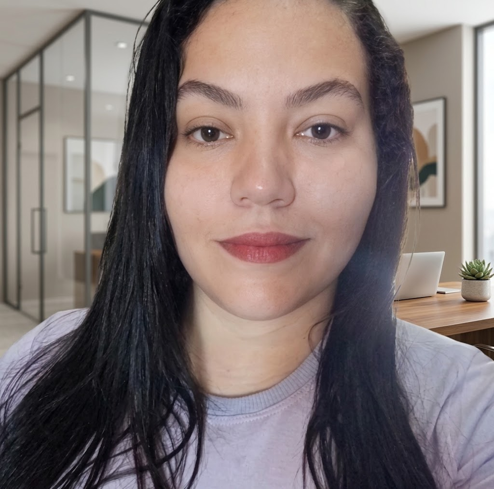

Gestora de RH & Assistente Administrativa
Até ao ano de 2024
Atendimento direto ao cliente, prospecção, negociação e gestão autónoma de vendas e stock.
Hapvida | Jan/2024 – Set/2025
Atendimento ao cliente, resolução de conflitos, escuta ativa e comunicação clara em ambiente de alto volume.
Formação em Setembro/2025
Desenvolvimento de competências em processos organizacionais, rotinas administrativas e gestão financeira básica.
AGEFIS - Fortaleza | Dez/2025 – Jul/2026
Suporte a processos administrativos públicos, organização de documentos, fluxo de chamados e apoio às equipas do setor.
Concluído em 01/2026
Formação superior focada em desenvolvimento de pessoas, recrutamento & seleção, clima organizacional e gestão de desempenho.